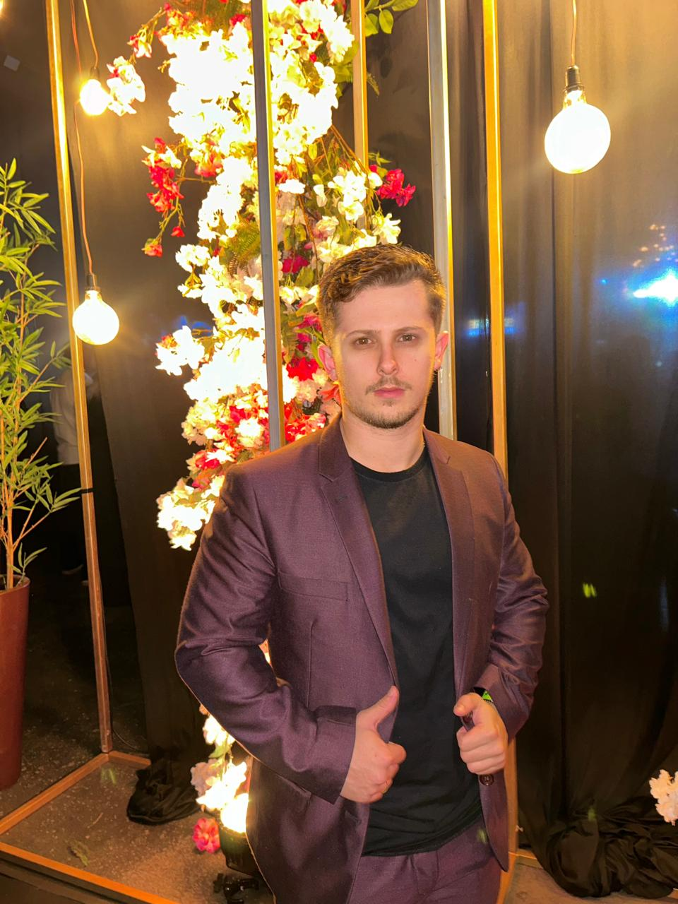
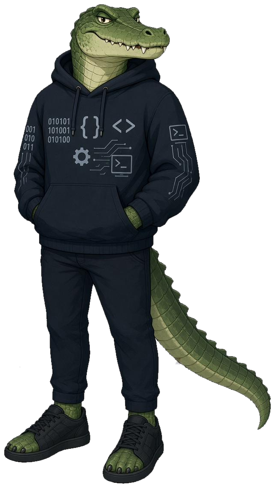

Back-end e dados
Python
Node.js
PostgreSQL
MySQL
APIs REST
Modelagem
quem somos
A OberFritz não é um balcão de atendimento com quinze camadas até chegar em quem escreve o código. Você fala direto com quem faz o diagnóstico, desenha a solução e coloca o sistema em produção.

perfil
Fundador · Desenvolvedor de software e infraestrutura
Trabalhamos com tecnologia porque gostamos do momento em que um processo confuso vira uma tela simples que qualquer pessoa da equipe consegue usar. Começamos resolvendo problemas pequenos — uma planilha que travava, um relatório que ninguém conseguia fechar — e fomos percebendo que o gargalo quase nunca estava onde a empresa achava que estava.
Foi daí que nasceu a OberFritz: uma empresa que entra na operação para entender como ela funciona de verdade antes de escrever a primeira linha de código. Software sob medida, automação, integração e infraestrutura tratados como uma coisa só, porque na prática é assim que eles funcionam.
Do lado técnico, passamos o dia entre back-end, banco de dados, containers e integrações. Do lado humano, fazemos questão de explicar cada decisão em português — sem jargão, sem caixa-preta e sem deixar o cliente refém de fornecedor nenhum.
competências
Ferramenta é meio, não fim. Esta é a caixa que usamos para resolver o problema — a escolha de cada peça depende do que a sua operação precisa, não da moda do momento.
trajetória
Formação, experiência e as viradas de chave que definiram o jeito de trabalhar da OberFritz.
Base formal em engenharia de software, banco de dados e redes, aplicada em paralelo a projetos reais rodando em produção.
Automações e sistemas internos para pequenas empresas. Foi aqui que ficou claro que entregar código sem entender o processo só gera mais uma ferramenta que ninguém usa.
Contato diário com ambientes de produção, containers, deploy automatizado, monitoramento e a responsabilidade de manter sistema no ar sem depender de uma pessoa só.
Consultoria, diagnóstico e construção de sistemas sob medida para empresas que cresceram mais rápido que os próprios processos.
como trabalhamos
Não mandamos orçamento de sistema para quem ainda não sabe qual é o gargalo. Primeiro entendemos a operação, depois falamos de escopo e de preço.
Você não precisa ser da área técnica para entender o que está sendo construído, quanto custa e por que aquela decisão foi tomada.
Código, dados, credenciais e documentação são seus. Nada de arquitetura montada para prender cliente em contrato de manutenção.
Preferimos prometer menos e entregar no dia combinado. Se algo atrasar, você fica sabendo antes do prazo estourar — não depois.
A primeira conversa é para entender o seu problema. Sem compromisso, sem apresentação comercial de trinta slides.
